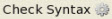

This work is licensed under a Creative Commons Attribution-ShareAlike 3.0 Unported License.
See http://creativecommons.org/licenses/by-sa/3.0/legalcode for more information.
Click on A to make all fonts on the page smaller.
Click on A to make all fonts on the page larger.
Click on HC to toggle high contrast mode. When you move your mouse over some bold words in high contrast mode, related words are automatically highlighted. Text is shown in black and white.
We refer to chunks of text as strings because they consist of characters strung together. We've been using strings to print text. We can also assign them to variables, like this:
my $title = "Teacher";
A double-quoted string wraps its contents between—believe it or not—double quotation marks. You can put anything you want between them, and your code will mean exactly what it says, with a few exceptions, like:
Those two-character sequences—digraphs if you prefer the technical term—are called escape sequences in Perl (because the backslash character changes the meaning of the next character, thereby "escaping" it). If you want to include the actual backslash character itself, use two backslashes: \\.
Perl doesn't move the cursor to the next line or tab stop. Instead, Perl turns the escape sequences into control characters—special characters that are invisible—and stores those in the string. When something prints the string to a screen, the driver that decides where to put characters on the screen recognizes those control characters and interprets them in terms of cursor movement. According to convention, there are notional "tab stops" spaced every eight characters along a line; that convention is coded within the driver for the output device itself. So if you're printing a string on a printer, the escape sequence \f gets turned by Perl into the control character called form-feed, and the printer will produce a new page.
Some escape sequences don't get turned into control characters, but instead cause Perl to change what follows them:
Hmm. That seems a little weird; after all, if you want the next character to be uppercase, why not type it that way? We'll learn the answer to that question shortly.
There are a few other escape sequences of diminishing usefulness; see perldoc perlop or http://perldoc.perl.org/perlop.html, "Quote and Quote-like Operators."
But double-quoted strings are capable of much more. You can put a scalar variable inside one, and the value of the variable will be substituted—in Perl we say interpolated—at that point.
Let's see what that looks like. Create a new file named insect_sales.pl and type the code below as shown:
#!/usr/bin/perl use strict; use warnings; my $date = localtime(); my $ants = 47_000; my $fleas = 240_000; my $beetles = 520; my $fruit_flies = 1_500_000; print "Welcome to Echidna Eric's Insect Emporium\n"; print "\n"; print "This is the inventory stock report for $date\n"; print "---------------------------------------------------------\n"; print "We have $ants ants\n"; print "We have $fleas fleas\n"; print "We have $beetles beetles\n"; print "We have $fruit_flies fruit flies\n";
 and run it.
cold:~$ cd perl1 cold:~$ ./insect_sales.pl Welcome to Echidna Eric's Insect Emporium This is the inventory stock report for Thu Dec 3 14:55:14 2009 --------------------------------------------------------- We have 47000 ants We have 240000 fleas We have 520 beetles We have 1500000 fruit flies cold:~/perl1$
Perl knows the current date and time! That's a feature of the localtime() function—assign its result to a scalar and you get that handy string.
We added underscores to large numbers to make them more readable—the underscores are where commas (or in Europe, the decimal points) would be if I was typing the numbers for publication, like 12,345. We can't use commas or periods here, because they mean something else in Perl, so we use underscores instead.
Every variable inside a double-quoted string is replaced by its current value at run-time. This interpolation makes print statements more readable. Compare these two statements:
print "Name:\t", $name, ", phone:\t", $phone, "\n";
or
print "Name:\t$name, phone:\t$phone\n";
A few things about the sample code above might bother you. If you typed the code in by hand, you probably got tired of all those print statements. Any time you spot repetition in a program, that's a sign that there's probably a better way to do it. How could we collapse all of those print statements down to one?
We could run all the strings together, but the program would become far less readable:
This is where Perl's here documents come in handy. (We call them heredocs for short.) What we'd really like to write in the code is the text to be printed out, the way we want it to come out; heredocs let us do this. Edit the program as shown:
#!/usr/bin/perl use strict; use warnings; my $date = localtime(); my $ants = 47_000; my $fleas = 240_000; my $beetles = 520; my $fruit_flies = 1_500_000; print <<"END_OF_REPORT"; Welcome to Echidna Eric's Insect Emporium This is the inventory stock report for $date --------------------------------------------------------- We have $ants ants We have $fleas fleas We have $beetles beetles We have $fruit_flies fruit flies END_OF_REPORT print 'done';
and run it.
Running the program gives the same result, but it's much more readable now. Here's how it works: <<, followed by a string within double quotation marks (in this case, END_OF_REPORT), is a Perl expression. That expression's value is the string that starts on the next line and continues up until (but not including) a line consisting of precisely the same string that followed <<. You must then have a newline character and nothing else. That includes trailing spaces, so make sure you don't have any! If you do, or if you make some other mistake in the terminating line, Perl will run off the end of your program searching for it and then complain. Let's make that mistake deliberately so you know what the error looks like. Edit your code as shown:
#!/usr/bin/perl use strict; use warnings; my $date = localtime(); my $ants = 47_000; my $fleas = 240_000; my $beetles = 520; my $fruit_flies = 1_500_000; print <<"END_OF_REPORT"; Welcome to Echidna Eric's Insect Emporium This is the inventory stock report for $date --------------------------------------------------------- We have $ants ants We have $fleas fleas We have $beetles beetles We have $fruit_flies fruit flies END_OF_THE_REPORT print 'done';
and run it.
cold:~/perl1$ ./insect_sales.pl Can't find string terminator "END_OF_REPORT" anywhere before EOF at ./insect.pl line 10. cold:~/perl1$
Now we've got a problem. Let's change it back so it runs correctly. Remove the red text as shown:
#!/usr/bin/perl use strict; use warnings; my $date = localtime(); my $ants = 47_000; my $fleas = 240_000; my $beetles = 520; my $fruit_flies = 1_500_000; print <<"END_OF_REPORT"; Welcome to Echidna Eric's Insect Emporium This is the inventory stock report for $date --------------------------------------------------------- We have $ants ants We have $fleas fleas We have $beetles beetles We have $fruit_flies fruit flies END_OF_THE_REPORT print 'done';
The string behaves like a double-quoted string, so you can interpolate variables in it.
| Note | You could embed literal newlines within a double-quoted string and print the whole report with one print statement and one set of double quotes around everything. But if you include a double quote somewhere in the report without realizing it, the quote would have to be escaped. It's also harder to see where a multi-line string ends without a distinctive line, like the one heredocs supplies. |
Edit the program as shown:
#!/usr/bin/perl use strict; use warnings; my $date = localtime(); my $ants = 47_000; my $fleas = 240_000; my $beetles = 520; my $fruit_flies = 1_500_000; print <<"END_OF_REPORT"; Welcome to Echidna Eric's Insect Emporium This is the inventory stock report for $date --------------------------------------------------------- We have $ants ants We have $fleas fleas We have $beetles beetles We have $fruit_flies fruit flies END_OF_REPORT my $insect_of_the_month = "caterpillar"; my $insect_of_the_month_count = 1_200; print "This month, we have $insect_of_the_month_count $insect_of_the_months\n";
and run it.
cold:~/perl1$ ./insect_sales.pl Global symbol "$insect_of_the_months" requires explicit package name at ./insect.pl line 23. Execution of ./insect.pl aborted due to compilation errors. cold:~/perl1$
Hmmm. It doesn't work. There is no variable named $insect_of_the_months. We meant to print out the value of $insect_of_the_month followed by an 's'. But Perl doesn't know that-it just reads as many consecutive characters in a variable name as it can, while still following the rules, and used that result. To get the result we want, we need some syntax in Perl that indicates, "this is the end of a variable name." For that, we'll use braces {}. Edit insect_sales.pl as shown:
#!/usr/bin/perl
use strict;
use warnings;
my $date = localtime();
my $ants = 47_000;
my $fleas = 240_000;
my $beetles = 520;
my $fruit_flies = 1_500_000;
print <<"END_OF_REPORT";
Welcome to Echidna Eric's Insect Emporium
This is the inventory stock report for $date
---------------------------------------------------------
We have $ants ants
We have $fleas fleas
We have $beetles beetles
We have $fruit_flies fruit flies
END_OF_REPORT
my $insect_of_the_month = "caterpillar";
my $insect_of_the_month_count = 1_200;
print "This month, we have $insect_of_the_month_count ${insect_of_the_month}s\n";
and run it.
cold:~/perl1$ ./insect_sales.pl This month, we have 1200 caterpillars cold:~/perl1$
So now you've seen how variables can be interpolated inside double-quoted strings; how do you think the \l and \U escape sequences are useful? Think it over before reading the next section.
Let's say you want an actual, uninterpolated, plain dollar sign $ in a double-quoted string. You'd escape it in the usual way: "I have \$10 in my wallet". And suppose you want a lot of plain dollar signs and backslash characters that remain as such. You could accomplish this by escaping each one, but you're going to get tired of hitting the backslash key, not to mention reading that long string!
You might think that this type of situation doesn't come up very often, outside of financial reports, but there's one example of strings like that you're certain to encounter: Perl code itself. We're not ready to tackle Perl code embedded as strings in Perl programs just yet, but trust me, they do occur, and when they do, you'll be glad you learned about single-quoted strings.
A single-quoted string is surrounded by single quotation marks and obeys these basic rules:
That's it. Everything else comes out just the way you put it in—including any backslashes that aren't followed by a single quotation mark or a backslash. Heredocs follow the same rules—use a single quotation mark after the << instead of double quotation marks. In that case, everything inside the heredoc is taken literally, including all backslashes and single quotation marks. This can be especially useful when you want to print a chunk of text completely literally—with no interpolation of any kind—and you don't want to escape dollar signs or check for other things that can be interpolated.
Take a look at this code:
#!/usr/bin/perl use strict; use warnings; my $mail_message = <<'END_OF_TEXT'; From: Dutiful Developer <programmer@example.com> To: Masterful Manager <boss@example.com> Subject: Code finished Hi boss, I finished my program. I'm especially proud of this part: my $first_name = "creative"; my $last_name = "Ceo"; print "This program ($0) is dedicated to our dear leader, \L\u$first_name \U$last_name\n"; END_OF_TEXT
There's some interesting stuff embedded in the code written by Dutiful Developer that I haven't told you about yet. Take the code fragment that's quoted in the mail message in the program (we have a program within a string within a program...), put it in a new file called escape_test.pl, and add the necessary preamble for all programs, as shown:
#!/usr/bin/perl use strict; use warnings; my $first_name = "creative"; my $last_name = "Ceo"; print "This program ($0) is dedicated to our dear leader, \L\u$first_name \U$last_name\n";
and run it.
cold:~/perl1$ ./escape_test.pl This program (./escape_test.pl) is dedicated to our dear leader, Creative CEO cold:~/perl1$
There's a detailed explanation of what's happening in this code here: http://perldoc.perl.org/perlvar.html; look for "PROGRAM_NAME." Take note of the effect of \L\u. Do you see why Perl's creator would want it to work this way?
Also, our code has one of Perl's special variables—$0. It's not a variable you can declare—it doesn't comply with the naming rules we know. But it's one of a number of variables that Perl populates with certain values. $0 contains the name of the program being executed (including whatever path was specified in the command line invocation).
Modify escape_test.pl as follows:
#!/usr/bin/perl
use strict;
use warnings;
my $first_name = "creative";
my $last_name = "Ceo";
my $dedication = "This program ($0) is dedicated to our dear leader, \L\u$first_name \U$last_name\n";
$first_name = 'passionate';
$last_name = 'president';
print $dedication;
and save it—but before you run it—quick, what do you think it will do? Will the dedication be to "Creative CEO" or "Passionate President"? Why do you think that?
Now run the program. You can see from the result that Perl does what we call early binding of variable values. That is, when $dedication is assigned, the variables that are part of the expression assigned to it are evaluated to their values in that instant. Changing those variables later makes no difference to the value of $dedication, because it's already been formed.
(And thank goodness it works this way, too; otherwise Perl programming would become seriously difficult. Think about it.)
Wow. We're really making progress. Keep it up! See you in the next lesson!